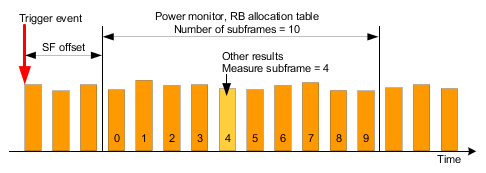

The LTE multi-evaluation measurement can capture up to 320 consecutive subframes, starting at a configurable offset from the trigger event.
The results "Power Monitor" and "RB Allocation Table" are available for the entire range of captured subframes. All other TX measurement results are derived from a selected subframe within the range of captured subframes (setting "Measure Subframe"). You can select which slot of the selected subframe is evaluated: the first one only, the second one only or both (setting "Measure Slot").
For TDD signals, you must ensure that the selected subframe is an uplink subframe. Which subframe is labeled 0, depends on the type of trigger signal and the subframe offset. For subframe offset 0, the subframe labeled 0 is an uplink subframe for power trigger signals (first detected uplink subframe). But for frame trigger signals, it is a downlink subframe (first subframe of frame).
For signals with carrier aggregation, some results are available per component carrier. Other results are measured on only one component carrier, the selected "Measurement Carrier". For details, see "Carrier Aggregation".
Depending on the measurement, the statistic count is defined in subframes or in slots.
- "Subframe Offset" = 3
- "Number of Subframes" = 10
- "Measure Subframe" = 4
- "Measure Slot" = 0 / 1 / all
- All statistic counts = 5
The following figure shows the resulting measured subframes.

- The power monitor and the RB allocation table show 10 subframes ("Number of Subframes"), labeled 0 to 9. The subframe labeled 0 is the fourth subframe (first + "Subframe Offset" 3) captured after the trigger event.
For the power monitor, the 10 subframes are captured five times (statistic count) to complete one statistics cycle. - For the power dynamics measurement, the subframe labeled 4 ("Measure Subframe") is captured five times (statistic count) to complete one statistics cycle.
- For all other results, five slots (statistic count) have to be measured per statistics cycle. Only slots within the subframe labeled 4 ("Measure Subframe") contribute to the results.
Each subframe contains two slots. To measure five slots with "Measure Slot" = all, the entire subframe range has to be captured three times. The first and second time, both slots of subframe 4 are measured. The third time, only the first slot of subframe 4 is measured. Now the statistics cycle is complete and a single-shot measurement stops.
With "Measure Slot" = 0, only the first slot is evaluated. With "Measure Slot" = 1, only the second slot is evaluated. In both cases, the entire subframe range has to be captured five times to measure five slots.